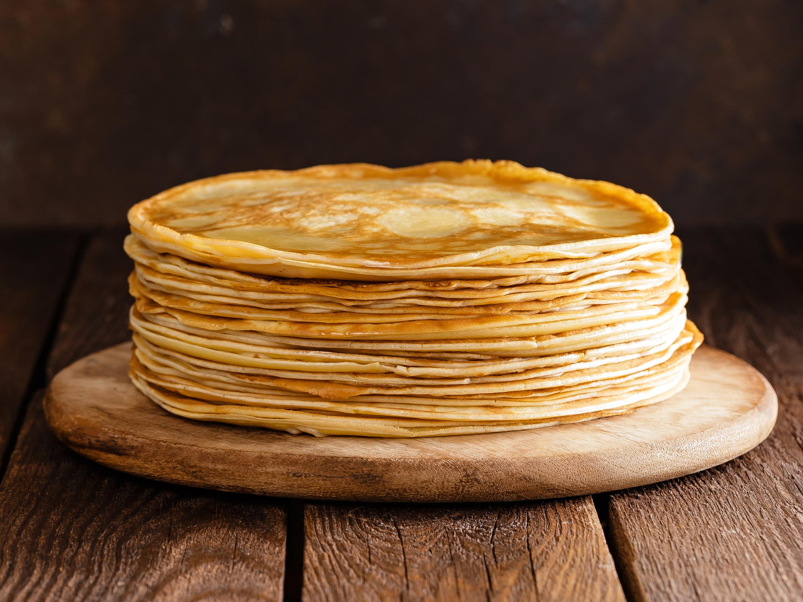

Les meilleurs crêpes
Liste des ingrédients
- 5 cl de rhum
- 50 g de beurre fondu
- 2 cuillères à soupe d' huile
- 3 cuillères à soupe de sucre
- 300 g de farine
- 3 oeufs entiers
- 60 cl de lait
Préparation
- Mettre la farine dans une terrine et former un puits
- déposer les oeufs entiers, le sucre, l'huile et le beurre
- Mélanger délicatement avec un fouet en ajoutant au fur et à mesure le lait
- La pâte ainsi obtenue doit avoir une consistance d'un liquide légèrement épais
- Parfumer de rhum
- Faire chauffer une poêle et la huiler très légèrement
- Y verser une louche de pâte
- attendre qu'elle soit cuite d'un côté avant de la retourner
- Cuire ainsi toutes les crêpes à feu doux
Bon appetit!
source
